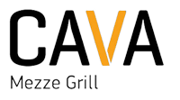
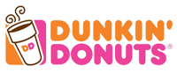
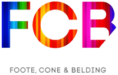
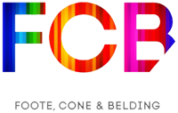

April 18 & 19, 2014

TEST TEST TEST HI HI HI HI HI The fourth annual Social Learning Summit presented by American University's Social Media Club.
Two jam-packed days of industry-focused panel discussions & keynotes designed
to explore the unique impact of social media in all of our lives.
SPEAKERS

MEG BIRAM
PERSONAL BRANDING

DRYOL JOYNER
SPORTS

HALEY BLUM
JOURNALISM

CHRIS GEIDNER
KEYNOTE
MEAGHAN MOYNAHAN
FASHION

MORGAN GRESS
STARTUPS
CAITLIN FRAZIER
JOURNALISM

JOEY MARBURGER
DESIGN

NEIL WELSH
ANALYTICS

CANDICE MACKEL
ENTERTAINMENT
EMILY WHITE
ENTERTAINMENT
ALISON CARLMAN
ACTIVISM
ABOUT THE CONFERENCE
The first Social Learning Summit took place in 2011, and has grown to be the largest student-run social media conference in DC. This year, SLS14 is going to be better than ever with new speakers & smaller panels prepped to provide you with the most unique, engaging and relevant content. All are invited to participate in this two-day extravaganza of social media knowledge, whether you are an online beginner or hashtag addict. All panels are tailored to a particular industry or topic, so that you can create your own schedule and customize your learning experience! Day One consists of a panel in partnership with American University's Public Relations Student Society of America and an opening party to kick everything off. Day Two is jam-packed with 14 different panels, two keynotes, networking breaks, and free food. Get ready, #SLS14 is almost here!
ABOUT SOCIAL MEDIA CLUB
As an official chapter of the National Social Media Club The American University Social Media Club mission is to create a network of social media users, to advance media literacy, encourage ethical behavior online, learn from media professionals and share the lessons they have learned to advocate for revolutionary new teaching methods utilizing social media and new technologies within American University. View the AUSMC website.

PANELS
Digital Do-Gooders
ACTIVISM
#SLSchange
Social Media Metrics
ANALYTICS
#SLSanalytics
UI/UX
DESIGN
#SLSdesign
No Business Like Social Business
ENTERTAINMENT
#SLSent
Digital Runway
FASHION
#SLSstyle
You Are What You Tweet
FOOD
#SLSeat
The Online Times
JOURNALISM
#SLSjourno
Brand You
BRANDING
#SLSme
On the Hill and Online
POLITICS
#SLSpoli
Social Scoreboard
SPORTS
#SLSsports
The First Follower
STARTUPS
#SLSstartup
The Online Mind
STUDENTS
#SLSstudent
SPONSORS
 
 



THE 2014 SOCIAL LEARNING SUMMIT is brought to you by the AMERICAN UNIVERSITY SOCIAL MEDIA CLUB
CONTACT US | SLS11 | SLS12 | SLS13 | BECOME A SPONSOR
Website designed and created by Lela Feldmeier